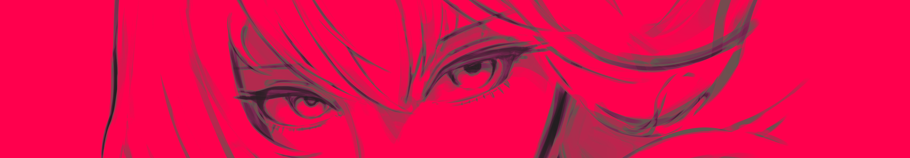

Welcome to SCARLET PRISM! A frenetic, fast-paced, colourful 2D twin-stick shooter.
You are Astraea, an angelic maiden, thrown onto an arena, destined to fight off corrupt, scarlet prisms (!) and corrupted celestial beings for all eternity. Or, for as a long as you can survive.
You can play the game on itch.io - it's available for Windows, Linux, or directly in your browser! All free of charge, forever.
Features:
Game made by Matvey Kerov. Music by Cadmium. Made with Godot 4.6 in 2026.